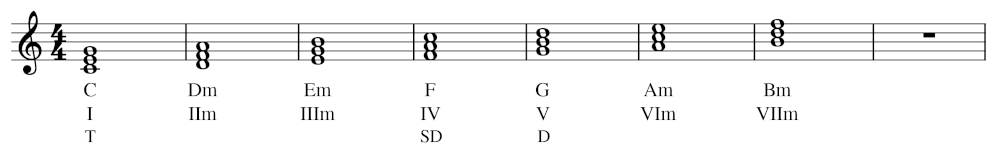

コード進行の世界観です。
作詞・作曲した歌に、僕が実際に作曲した曲があります。
リズムとハーモニーとメロディは音楽にとって大切な三大要素。
| 用語 | 説明 |
|---|---|
| リズム | 拍子 |
| メロディ | 旋律 |
| ハーモニー | 和音 |
特に、メロディはAメロ、Bメロ、サビのような構成になることが多い。
コードは和音のことであり、コード進行は曲全体の和音の変化のこと。また、コード進行によってメロディの音は決まってくる。
作曲をするために必要なのは、コード進行の知識です。
そもそも、メロディを作曲するために必要なのは、C - F - G7 - Cのようなコード進行です。
全ての楽曲は、コードと呼ばれる「和音」を使って各小節に分かれています。このコードで使われる音が、メロディのその小節で使われています。
コードが決まってしまえば、そのコードの中から適当に音を選んで、それを使ったメロディを作ってしまえば、作曲は誰でもできるのです。
コード進行は、Aメロ、Bメロ、そしてサビのような曲の進行の中で、それぞれがC - F - G7 - Cのような繰り返しで構成されます。
コード進行を決めるのにはさまざまなやり方がありますが、基本的にダイアトニックコードと呼ばれる音階（スケール）から作られます。
一番簡単なのは気に入った誰かの曲のコード進行を使うことです。
後日注記：作曲は、コード進行であり、ダイアトニックコードからスリーコードをとってきて、そのコードを使ったメロディを記述すればよい。
基本的に最初の音からひとつずつ音飛びした三音の和音のことをコードと言います。楽譜では五線譜の上の方に書いてあります。ラがAで、順に一つずつ大きくなります。左手を付ける場合、左手を真面目に弾かなくても、コードを弾けばそれなりの音楽になります。
| コード | 説明 |
|---|---|
| メジャー | 明るい和音（長調） |
| マイナー | 悲しい和音（短調） |
| セブンス | 7音目の音を追加する |
基本的にはメジャー、マイナー、セブンスのA, B, C, D, E, F, Gを覚えましょう。
実際は弾いている今の音やド・ミ・ソの近場の音に変換し、セブンスは三番目の音を省略することが多いです。Fであればファ・ラ・ドをド・ファ・ラに置き換えて弾きます。
最低限覚えておくべきなのは、C、F、G（のメジャー）ではないかと思います。AmやC7なども良く出てくるので、頑張って覚えましょう。
最初のうちはセブンスはメジャーと同じ音を弾いても何とか聞こえます。あとはCでGと同じ音を弾くなどの荒業もあるので注意してください。
コードはピアノだけではなく、ギターなどにも通用する便利な技術です。ギターを弾く際は、コードを弾いて和音を出し、それに歌を歌って弾き語りをすることが多いです。
調は、楽譜の一番左に、それぞれの調として#や♭がついています。
この#や♭がついている音階は、全ての音符に#や♭をつけて弾かなければなりません。
上のA～Gのコードにイロハニホヘトという日本読みを付けて呼びます。長調（明るい音）と短調（悲しい音）の二種類があります。（ちなみにドレミファソラシはイタリア語の読み方です。）
たとえば、「Cメジャー」は「ハ長調」と呼ばれます。
たとえドから始まる曲は、その曲のすべての音の音階を同じだけ上げることで、レから弾くこともできるし、ミから弾くこともできる。これを「キーを変える」と言う。
ドをレに変えた場合、すべての音を同じだけ上げる。レはミになり、ミはファ#になる。
CのキーをDやEに変えることで、調を変えて曲を弾ける。これを「移調」と言う。
ポップスの楽曲は、Aメロ、Bメロ、サビの三部形式の曲が多いです。
ですが、Aメロとサビだけの二部形式の曲も多いです。
曲によってはもうひとつ「大サビ」を入れることがあります。
度数（ディグリー）とは、音と音の離れ具合のこと。
ドとドのように、同じ音同士の場合を1度とし、ひとつ離れるごとに度数が増えていく。ドとレは2度、ドとミは3度。
ドとドは、完全に1度であるため、「完全1度」と呼ぶ。
ドとレは、長音が2つであるため、「長2度」と呼ぶ。同様にドとミは長3度。
これに対して、ミとファは2度でありながら長2度よりも半音離れている距離が短い。なのでこれを「短2度」と呼ぶ。
また、ドとミ♭のように、3度から半音短くなったものを「減3度」と呼ぶ。あるいはドとレ♯だと考えれば「増2度」と言ってもいい。ただし、通常、3度や2度の場合は長・短で表現することが多い。
基本的に、1度、4度、5度は完全であり、2度、3度、6度、7度には長短がある。
だが4度や5度の場合も場所によって長さの違いがあり、もっともよく響く音程を「完全5度」などと表し、それが増減したものを「増・減5度」とする。
| 音程 | 説明 |
|---|---|
| 完全協和音程 | もっとも心地よい協和音。 1度、8度、5度、4度となる。 |
| 不完全協和音程 | 一応心地よい協和音。 長短の3度と6度となる。 |
| 不協和音程 | 心地よくない不協和音。 長短の2度と7度、その他の調和しない音程。 |
（以下は作曲をしたい人の本 CD付を参考に執筆・引用しました。）
音名には、ドレミ...だけではなくCDE...やハニホ...も良く使われる。
| イタリア式 | ド | レ | ミ | ファ | ソ | ラ | シ |
|---|---|---|---|---|---|---|---|
| 英語式 | C | D | E | F | G | A | B |
| 日本語式 | ハ | ニ | ホ | ヘ | ト | イ | ロ |
基本的なコード：
| 名前 | コード | 音階 | 説明 |
|---|---|---|---|
| メジャートライアド | C | ド・ミ・ソ | 第3音が長3度、第5音が完全5度 |
| マイナートライアド | Cm | ド・ミ♭・ソ | 第3音が短3度 |
| メジャーセブンス | Cmaj7 | ド・ミ・ソ・シ | メジャートライアドに長7度（maj7）を追加 |
| セブンス | C7 | ド・ミ・ソ・シ♭ | メジャートライアドに短7度（7）を追加 |
| マイナーセブンス | Cm7 | ド・ミ♭・ソ・シ♭ | マイナートライアドに短7度（7）を追加 |
| マイナーセブンス・フラットファイブ | Cm7(♭5) | ド・ミ♭・ソ♭・シ♭ | 第5音が減5度（♭5） |
| オーギュメント・セブンス | Caug7 | ド・ミ・ソ#・シ♭ | 第5音が増5度（aug） |
このほか、
| コード | 説明 |
|---|---|
| テンションコード | 9th、11th、13thなど。 |
| add9（アドナインス）コード | 9thを加える。 |
| sus4（サスフォー）コード | 第3音を省いて第4音を弾く。 |
| dim（ディミッシュ）・ dim7コード | 3和音の場合、第3音が短3度、第5音が減5度。 4和音の場合、第7音が減7度（長6度）。 |
| 分数コード （C/DやAm7/Dなど） | 分母にあたる部分はルート音（最低音）、 分子にあたる部分はコードを表す。 分数表記しない場合は、Am7onDのように表記する。 |
| 第6音コード | 第6音がある。 |
などがある。
（作曲をしたい人の本 CD付を参考に執筆しました。）
メロディをつける時は、進行するコードの中にある音を使って右手と左手を考えます。
実際には、さまざまな五線譜のコードを見て、気に入った曲のコードを使って作曲をすると面白いでしょう。
後日注記：他人の作曲した曲のコード進行を見て真似して曲を作ることは、直接的な音楽制作のプラクティス（練習）になってとても有益ですが、実際に自分の作曲する曲に適用させる時は、パクリにならないようによく注意しましょう。
ダイアトニックコードとは、スケールの音だけを使って三和音（あるいは四和音）にしたコードのこと。
キーCのダイアトニックコードは以下のようになる。
| ディグリー・ネーム | I | IIm | IIIm | IV | V | VIm | VIIm(♭5) |
|---|---|---|---|---|---|---|---|
| コード・ネーム | C | Dm | Em | F | G | Am | Bm(♭5) |
| スリーコード | T | SD | D |
特に、1番目のトニックコード（T）、5番目のドミナントコード（D）、4番目のサブドミナントコード（SD）は、終止感に深くかかわる重要なコード。
| コード進行 | 説明 |
|---|---|
| スリーコード | T、SD、Dを使った単純な進行。 シンプルかつ分かりやすいため、さまざまな曲で広く用いられている。 |
| ツーファイブ | 代理和音を用いたコード進行。 T、SD、D以外のコードはT、SD、Dの各グループにまとめることができ、 T、SD、Dの代わりに使うことができる（代理和音）。 |
| 循環コード | Tから始まってTに終わり、それが繰り返されるコード進行。 |
（作曲をしたい人の本 CD付を参考に執筆しました。）
マイナーキーのスリーコードは、Tm（トニックマイナー）、SDm（サブドミナントマイナー）、Dm（ドミナントマイナー）と呼ぶ。
マイナーキーには、自然的短音階上のコード、和声的短音階上のコード、旋律的短音階上のコードの3つの音階がある。
（作曲をしたい人の本 CD付を参考に執筆しました。）
以下は、作曲関連の用語集。
| 用語 | 説明 |
|---|---|
| コードトーン | コードの中に存在する音のこと。Cならばドミソ。 |
| ノンコードトーン | コードの中に存在しない音のこと。メロディを連続的に繋いでいくために必要となる。 |
| フレーズ | ひとつひとつのメロディの中で、再利用される部品のこと。 |
| 順次進行 | 音が隣り合う音へと続いていくメロディのこと。 |
| 跳躍進行 | 音が3度以上離れた音へと跳んでいくメロディのこと。 |
| 繰り返しと変化 | 繰り返しを使えば統一感が出るが、狙って変化させることも必要。 |
| スケール | キー（音階）のこと。メジャースケールとマイナースケールがある。 |
| 転調 | キーを変えること。今までとは雰囲気の違ったメロディの感じを出せる。 |
| ビート | そもそもは心臓の鼓動のことを指す英単語で、音楽の拍のこと。8ビートや16ビートがある。 |
（作曲をしたい人の本 CD付を参考に執筆しました。）
2024.02.22
カノン進行は、パッヘルベルが作曲したカノンという曲のコード理論で、作曲の手本とも言えるほど多くの曲に使われている「黄金コード」である。
「コード理論のことが全然分からない」「作曲をしたいからコード理論の基本を教えてほしい」という方には、以下の動画で分かる入門がおすすめです。
実際のところ、上記の僕が書いたことは基本中の基本であり、これだけで作曲はできません。この動画を見て、作曲の道に一歩近づけたらいいと思います。
以下のリンクはこの動画を作成している方のチャンネルです。たくさんの音楽理論の動画があり、もはや「すごい」を通り越して「畏怖」「恐ろしい」の対象です。
YouTubeも参照のこと。
上の動画もそうですが、最近は作曲するための方法はYouTubeなどを探せば、良質な音楽理論の入門動画がいくらでもでてきます。
作曲は、難しく見えて本当は簡単です。ダイアトニックコードなどから、スリーコードのようなコード進行を調べて、そのコードに使われている音を使ってメロディと伴奏を作曲すればいいからです。
ですが、作曲はとても奥が深いです。コード進行にはさまざまな方法論やパターンがあります。どのようなコード進行がその曲に合っているかは自分で判断しなければなりません。
また、Aメロ、Bメロ、サビの展開（曲の雰囲気と構成）も重要ですし、歌詞や歌声や演奏も重要となります。YouTubeなどに動画として投稿するならば、動画編集、イラストやアニメ、その中のストーリーなども重要な要素となります。
作曲に関する心構えは、以下のナユタン星人さんのインタビュー記事が参考になります。生活の中でなんとなく歌いたい時に、適当にメロディにすることの延長線上が作曲という作業らしいです。
ナユタン星人も参照のこと。
2024.05.11
作曲は、コード進行と楽器の音色です。
その時その時のコードをどのように進行させるのかは、上に書いた通りです。その上で、メロディを付けて、リズムとハーモニーとともに旋律を奏でます。
ここで大切なのが、「楽器の音色」です。たとえばバイオリンは切れた音がするため、一瞬一瞬の「痛み」のような音をあらわすのに使えます。
ピアノの場合は、「流れるような音の並び」を表現できるため、美しいオーロラのような情景を聴き手に与えられます。
ギターやドラムやベースはロックンロールの狂った音楽を表すことができます。
最近の歌では、機械音源を使って、さまざまな音を効果的に出すことができます。このように「音色」と「コード進行」を組み合わせることで、まるで魔法のように聴き手に「魅惑の音楽」を提供することができます。
本当のところ、メロディを作るのはそんなに難しいことではありません。コード（和音）の中の音を使って、歌詞に合うように作れば良いのです。
また、コード進行が難しいという方は、パクリから始めましょう。自分の好きな曲や有名な曲から、コードだけをコピーして、その上でメロディを自分でコードの中の音を使って書くのです。もちろんピアノの鍵盤を弾きながらメロディをつけてもいいですし、鼻歌でも構いません。コードは、楽譜の上の方に「C」とか「Am」とついているのがコードです。これを元に、自分なりにCのメロディを書きましょう。まずはそこからです。すぐに、素晴らしい作曲ができると思います。
作曲家の方からは叱られるかもしれませんが、作曲はそんなに難しい仕事ではありません。
なぜなら、適当にノリのいいサウンドを作ればいいからです。
クラシック音楽のような、たとえばバッハやモーツァルトのようなきちんとした作曲であれば、形式と理論に則った正しく賢い音楽を作らなければいけないかもしれません。
ですが、実際のところ、J-POPやロックのような音楽であれば、そんなに形式通りに作る必要はありません。
簡単にギターとベースとドラムで演奏することができるような、ノリのいいサウンドを作ればいいのです。
音楽を作ることで、「ノリがいい」という要素は非常に重要です。適当に聴いていてノレるような音楽、これがJ-POPの歌手やバンドグループには求められます。
なので、あまり難しく考えすぎず、ノリのいいサウンドを作ってみてはどうでしょうか。意外と簡単ではないかと思います。
2022.11.27
実際のところ、音楽を作るのに、必ずしも楽器は必要ありません。
なぜなら、どんな音色でも曲になるからです。
どんな音色でもいいのであれば、楽器であることにこだわる必要はありません。音色を出せるものはすべて楽器だと言えます。
しかしながら、ひとつ言えるのは、「音階」を表現できることが必要であるということです。
僕は、バッハのような過去の作曲家は、そういうところに気付いていたところがあると思います。
ピアノやギターの本質とは、「音階を表現できる」ということです。音階を表現できるという特徴があれば、本当にどんな雑音やノイズであっても曲になり得ます。
ですが、楽器に価値がないわけではありません。なぜなら、だからこそ、楽器の「音色」の特徴が重要になるからです。
どんな音色でもいいからこそ、真に心地よい音色を出せる楽器を探究していくことが、逆に必要なのです。
つまり、どんな音色でも構わないが、だからこそ、もっとも一番いい音色を探し出すことが重要だ、ということです。
僕は、これは楽器だけではなく歌唱についても言えると思います。すなわち、ボーカロイドのような電子的な歌声は、決して音楽の歴史から言って間違っていないということです。
初音ミクの歌声を「気持ち悪い」と言う人もいますが、僕は決してそうではないと思います。あのような新しい「音」を表現できるということが、まさに「初めてのこと」であるということが言えると思います。そのような「初めての音」を、決して否定しないべきだと思います。今までの既成概念にとらわれないことが、「今までにない新しい音色」を探究することに繋がります。真に理想とする音色が、既にこの地球に存在するとは限らないからです。
2023.06.08
歌う曲の作曲として言えるのは、「歌うパート」と「演奏だけのパート」を繰り返すということです。
歌うパートでは、歌う人の歌詞の乗ったメロディが主役であり、演奏は裏方の伴奏になります。ここでは歌声のメロディと、裏方の伴奏が作曲の担当です。
演奏だけのパートでは、演奏が派手な音楽を流して、次の歌うパートまでを繋ぎます。ここではギターやドラムのような楽器の演奏が作曲の担当です。
基本的に、そのように、歌うパートと演奏のパートを繰り返すだけです。歌声の入る部分では伴奏は控えめになり、演奏だけの部分では派手に演奏します。
そして、それらのひとつひとつの音をコードの流れ（たとえばスリーコード）にすることで、作曲はできます。
また、曲は基本的に「Aメロ」「Bメロ」「サビ」などから成り立ちます。これらのそれぞれのパートを作曲することが作曲家の仕事です。Aメロから作らなければいけないとか、サビから作らなければいけないといったルールはありません。サビから思いつけばサビから作り、歌詞から思いつけば歌詞をメロディに乗せるように作ります。
2025.02.17
2024-07-26に関連する内容があります。
音楽制作については、音楽制作ソフトウェア、音楽サービス、ギターなどを参照のこと。
作曲した曲の動画配信については、YouTubeやniconicoを参照のこと。
自分の作詞・作曲した歌をボーカロイドに歌わせることもできます。ボーカロイドを参照のこと。